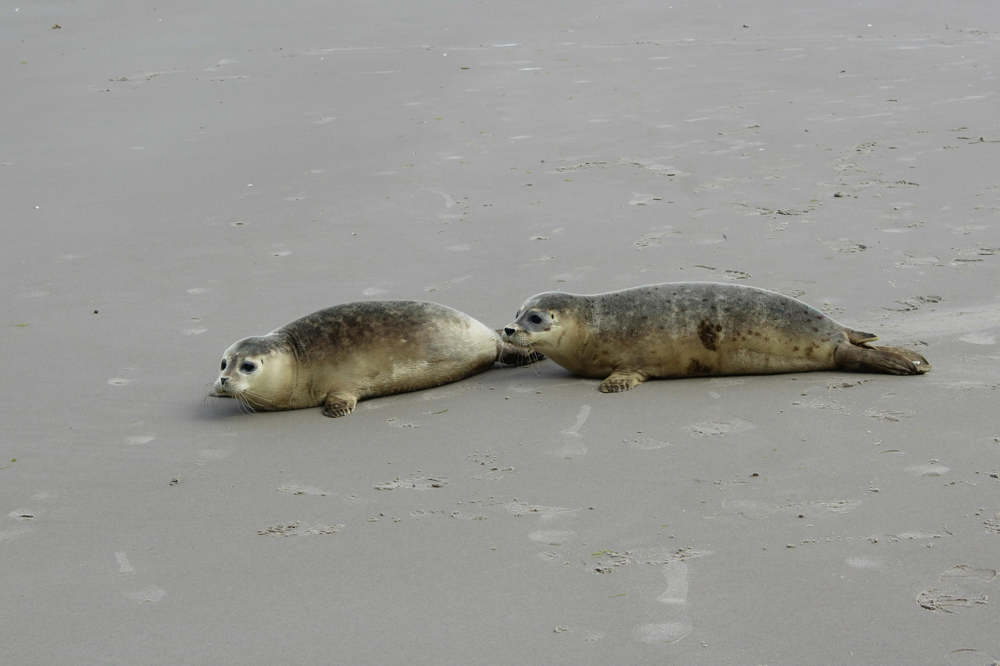

Вони живуть від 20 до 35 років. Дивлячись який вид, звичайно це 30-35 років. Морські слони живуть від 18 до 21 років. Але корону по довгому життю займають Байкалські Нерпи, бо вони живуть аж 50-55 років! Цікавий Факт: Самки живуть довше ніж савці
